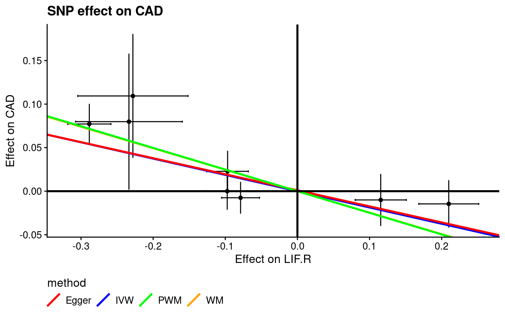
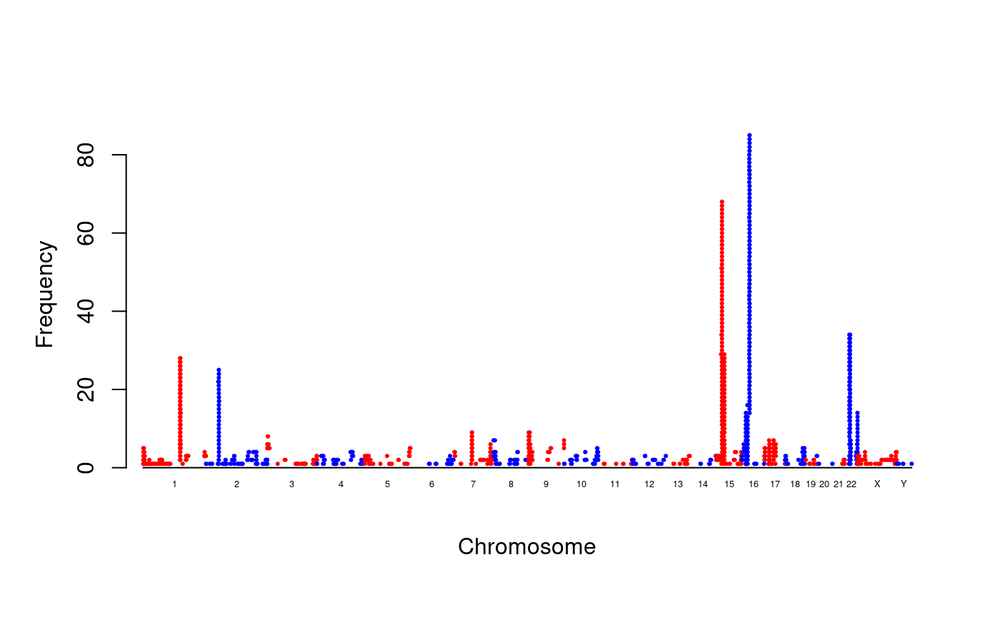

We describe some functions from R/gap.
chr_pos_a1_a2 and inv_chr_pos_a1_a2
They are functions to handle SNPid.
require(gap)
#> Loading required package: gap
#> gap version 1.2.3-2
s <- chr_pos_a1_a2(1,c(123,321),letters[1:2],letters[2:1])
inv_chr_pos_a1_a2(s)
#> chr pos a1 a2
#> chr1:123_A_B chr1 123 A B
#> chr1:321_A_B chr1 321 A B
inv_chr_pos_a1_a2("chr1:123-A_B",seps=c(":","-","_"))
#> chr pos a1 a2
#> chr1:123-A_B chr1 123 A Bcs
This is a function for credible set.
# zcat METAL/4E.BP1-1.tbl.gz | \
# awk 'NR==1 || ($1==4 && $2 >= 187158034 - 1e6 && $2 < 187158034 + 1e6)' > 4E.BP1.z
tbl <- within(read.delim("4E.BP1.z"),{logp <- logp(Effect/StdErr)})
z <- cs(tbl)
l <- cs(tbl,log_p="logp")gc.lambda
The definition is as follows,
gc.lambda <- function(p) {
p <- p[!is.na(p)]
n <- length(p)
obs <- qchisq(p,1,lower.tail=FALSE)
exp <- qchisq(1:n/n,1,lower.tail=FALSE)
lambda <- median(obs)/median(exp)
return(lambda)
}
# A simplified version is as follows,
# obs <- median(chisq)
# exp <- qchisq(0.5, 1) # 0.4549364
# lambda <- obs/exp
# see also estlambda from GenABEL and qq.chisq from snpStats
# A related function
lambda1000 <- function(lambda, ncases, ncontrols)
1 + (lambda - 1) * (1 / ncases + 1 / ncontrols)/( 1 / 1000 + 1 / 1000)gsmr
The function was originally developed to rework on data generated from GSMR, although it could be any harmonised data.
print(mr)
#> SNP b.LIF.R SE.LIF.R b.FEV1 SE.FEV1 b.CAD SE.CAD
#> 1 rs188743906 0.6804 0.1104 0.00177 0.01660 NA NA
#> 2 rs2289779 -0.0788 0.0134 0.00104 0.00261 -0.007543 0.0092258
#> 3 rs117804300 -0.2281 0.0390 -0.00392 0.00855 0.109372 0.0362219
#> 4 rs7033492 -0.0968 0.0147 -0.00585 0.00269 0.022793 0.0119903
#> 5 rs10793962 0.2098 0.0212 0.00378 0.00536 -0.014567 0.0138196
#> 6 rs635634 -0.2885 0.0153 -0.02040 0.00334 0.077157 0.0117123
#> 7 rs176690 -0.0973 0.0142 0.00293 0.00306 -0.000007 0.0107781
#> 8 rs147278971 -0.2336 0.0378 -0.01240 0.00792 0.079873 0.0397491
#> 9 rs11562629 0.1155 0.0181 0.00960 0.00378 -0.010040 0.0151460
res <- gsmr(mr, "LIF.R", c("CAD","FEV1"),other_plots=TRUE)


f <- "INF1_CAD-FEV1.csv"
write.table(with(res,r), file=f, quote=FALSE, col.names=FALSE, row.names=FALSE, sep=",")
top <- function(r)
sapply(c("IVW","EGGER","WM","PWM"), function(x) as.numeric(gap::pvalue(r[[paste0("b",x)]]/r[[paste0("seb",x)]])))
r <- read.csv(f,as.is=TRUE)
p <- top(r)
data.frame(r,p)
#> IV bIVW sebIVW CochQ CochQp bEGGER sebEGGER
#> 1 LIF.R.CAD -0.18710875 0.04992948 2.1156746 0.9531614 -0.1843936 0.06009144
#> 2 LIF.R.FEV1 0.04457766 0.01238405 0.4815447 0.9998844 0.0486759 0.01494467
#> intEGGER seintEGGER bWM sebWM bPWM sebPWM
#> 1 0.0009905967 0.009704878 -0.24678493 0.04507241 -0.24842463 0.04421814
#> 2 0.0013397058 0.002432065 0.06240365 0.01220117 0.05518126 0.01312195
#> IVW EGGER WM PWM
#> 1 0.000179 0.00215 4.37e-08 1.93e-08
#> 2 0.000319 0.00113 3.14e-07 2.61e-05
unlink(f)invnormal
The function is widely used in various consortium analyses and defined as follows,
An example use on data from Poisson distribution is as follows,
METAL.forestplot
The following is the documentation example,
require(gap.datasets)
data(OPG)
METAL_forestplot(OPGtbl,OPGall,OPGrsid,width=8.75,height=5)


mhtplot.trunc
Again this is the documentation example,
options(width=120)
require(gap.datasets)
mhtdata <- within(mhtdata, {z=qnorm(p/2, lower.tail=FALSE)})
mhtplot.trunc(mhtdata, chr = "chr", bp = "pos", z = "z", snp = "rsn", y.brk1=10, y.brk2=12, mtext.line=2.5)
# https://portals.broadinstitute.org/collaboration/
# giant/images/0/0f/Meta-analysis_Locke_et_al+UKBiobank_2018.txt.gz
gz <- gzfile("work/Meta-analysis_Locke_et_al+UKBiobank_2018_UPDATED.txt.gz")
BMI <- within(read.delim(gz,as.is=TRUE), {Z <- BETA/SE})
print(subset(BMI[c("CHR","POS","SNP","P")],CHR!=16 & P<=1e-150))
library(Rmpfr)
print(within(subset(BMI, P==0, select=c(CHR,POS,SNP,Z)),
{P <- format(2*pnorm(mpfr(abs(Z),100),lower.tail=FALSE)); Pvalue <- pvalue(Z); log10P <- -log10p(Z)}))
png("BMI.png", res=300, units="in", width=9, height=6)
par(oma=c(0,0,0,0), mar=c(5,6.5,1,1))
mhtplot.trunc(BMI, chr="CHR", bp="POS", z="Z", snp="SNP",
suggestiveline=FALSE, genomewideline=-log10(1e-8),
cex.mtext=1.2, cex.text=1.2,
annotatelog10P=156, annotateTop = FALSE, highlight=c("rs13021737","rs17817449","rs6567160"),
mtext.line=3, y.brk1=200, y.brk2=280, cex.axis=1.2, cex.y=1.2, cex=0.5,
y.ax.space=20,
col = c("blue4", "skyblue")
)
dev.off()The plot for the GIANT data is shown here, https://jinghuazhao.github.io/Omics-analysis/BMI/.
cnvplot and circos.cnvplot
These are a functions to plot distribution of CNVs,

circos.cnvplot(cnv)
#> Warning in genomicPanelFun(df[2:3], df[-(1:3)], .param = .param): NAs introduced
#> by coercion
#> Warning in genomicPanelFun(df[2:3], df[-(1:3)], .param = .param): NAs introduced
#> by coercion
snptest_sample
This is a function to output sample file for SNPTEST.
d <- data.frame(ID_1=1,ID_2=1,missing=0,PC1=1,PC2=2,D1=1,P1=10)
snptest_sample(d,C=paste0("PC",1:2),D=paste0("D",1:1),P=paste0("P",1:1))The commands above generates a file named ``snptest.sample.